Jeu de rôle narratif illustré · règles du SRD 5.2.1
Entièrement créé par Claude, l'IA d'AnthropicLa Table du Conteur
Racontez l'histoire, mais laissez les dés décider.
La Table du Conteur vous invite à créer de 1 à 6 aventuriers et à les mener dans des histoires complètes. Le conteur raconte la scène et répond à vos idées libres. Le jeu, lui, calcule chaque dé, chaque règle et chaque conséquence.
Nouveautés
Ce qui a changé dans le jeu
Le jeu avance par lots. Voici les changements les plus visibles.
La feuille de personnage devient l'inventaire
Ouverte en grand : l'équipement sur une silhouette, le sac du groupe à côté, la fiche complète dans un second onglet. Le sac n'est plus dans le panneau latéral.
Deux jeux d’armes
Un héros porte deux jeux d'armes, dont un seul est en main. En combat, une carte permet d'en changer, gratuitement, une fois par tour.
Un bouclier ou une arme Légère à la main gauche
Le jeu refuse ce que les règles interdisent : une arme à deux mains ne laisse pas de place au bouclier. Avec une arme Légère, l'attaque de la main gauche suit en action bonus.
Des rencontres en plein écran
Le lieu, les créatures et leur danger, puis les choix numérotés, et pour chaque issue le jet qu'elle demande.
Un panneau de combat repensé
Les cartes rangées par catégorie, avec leur coût, le pourcentage de toucher et l'image de l'arme.
Le principe
Un RPG textuel illustré
Un livre dont vous êtes le héros, avec toute la mécanique de Donjons & Dragons.
La Table du Conteur est un jeu de rôle textuel, avec des images. Vous lisez la scène, vous voyez le lieu, puis vous choisissez : parler, fouiller, négocier, fuir ou combattre. Comme dans un livre dont vous êtes le héros, chaque décision ouvre une suite et laisse une trace dans l'histoire.
Mais ici, ce n'est pas qu'un paragraphe de plus à tourner : le jeu s'appuie sur les règles libres de Donjons & Dragons 5e (le SRD 5.2.1, sous licence libre) et sur toutes leurs mécaniques. Vos héros ont des caractéristiques, des compétences, des jets de dés, des points de vie, des sorts, des repos, et leurs actions réussissent ou échouent vraiment.
Un livre dont vous êtes le héros
Du texte à lire, des choix à faire, des conséquences qui comptent, plusieurs fins.
Les règles libres de D&D 5e
12 classes, 9 espèces, 339 sorts, jets de dés, états, repos, combat tactique : la mécanique est là.
Des images à chaque pas
Chaque lieu, personnage, objet et monstre est illustré, pour que le récit se voie.
Jeu indépendant, fondé sur le System Reference Document 5.2.1 de Wizards of the Coast (licence Creative Commons Attribution 4.0). Ce n'est pas un produit officiel de Donjons & Dragons.
01
Un conteur qui improvise, mais ne triche pas
Le conteur est une intelligence artificielle qui raconte la scène et répond à vos idées libres.
Vous écrivez ce que votre personnage veut faire ou dire, et le conteur répond avec ses mots et son ton. Il ne lance jamais les dés lui-même.
Le conteur propose, le jeu décide. Les règles, les combats, les trésors et les conséquences sont calculés par le jeu, et l'IA ne peut ni tricher ni inventer un secret.
Vous pouvez aussi jouer sans lui. Le mode livre suit les textes écrits par les auteurs et les boutons proposés.
- Le conteur raconte et répond à vos idées libres
- Le jeu calcule tous les dés et toutes les règles
- L'IA ne peut ni tricher ni inventer un secret
- Mode livre : les textes des auteurs, sans clé d'API
- Conteur IA : écrivez librement ce que vous voulez faire ou dire
- Des personnages qui ne révèlent un secret que si le jeu le permet
- Un récit plus vivant, sur demande, pour une scène
- Seuls les moments racontés par le conteur coûtent
02
Créez vos aventuriers
Créez vos héros pas à pas, puis formez un groupe de 1 à 6 aventuriers.
Le créateur compte huit écrans, dans l'esprit de Baldur's Gate : une liste à gauche, la description à droite. Un bouton « Recommandé » vous guide partout, et « Création rapide » vous lance en un clic.
Vous choisissez l'espèce, la classe, l'historique, les caractéristiques, l'alignement, le nom et le portrait. Le jeu vérifie que chaque choix respecte les règles.
Pour le groupe, de 1 à 6 héros suffisent, et beaucoup de joueurs en préfèrent 1, 4, 5 ou 6. Vous pouvez exporter votre groupe, l'importer ou dupliquer un héros.
- 9 espèces, de la drakéide au tieffelin
- 12 classes, du guerrier au barde
- Caractéristiques : valeurs standard, achat de points ou tirage 4d6
- 54 portraits à choisir dans une galerie
- Un groupe conseillé, prêt à jouer
- Export, import et duplication des héros
- Niveau du groupe réglable de 1 à 20
- Des conseils de composition, jamais bloquants
Création
Le créateur de personnage, en 8 écrans
Des écrans courts, une liste à gauche, une description à droite, un bouton Recommandé partout et une Création rapide. Le jeu vérifie chaque choix : une fiche invalide ne passe pas.
- 1. EspèceNeuf espèces, leurs traits et leur lignage.
- 2. ClasseDouze classes, niveau de départ de 1 à 20.
- 3. HistoriqueLe passé du héros, ses atouts et son don.
- 4. CaractéristiquesValeurs standard, achat de points ou tirage 4d6.
- 5. Choix de classeCompétences, sorts, équipement, avec le bouton Recommandé.
- 6. AlignementLes neuf alignements, en un clic.
- 7. Nom et portraitUne galerie de 54 portraits, et une ligne de caractère.
- 8. RécapitulatifLa fiche complète, validée par le jeu.
03
Un équipement qui se porte vraiment
Chaque objet a sa place : la tête, le cou, le torse, les mains, les anneaux. Un héros ne tient pas quatre armes ni deux boucliers.
La feuille de personnage est aussi l'inventaire. Un héros porte ses objets sur une silhouette : tête, cou, dos, torse, gants, ceinture, pieds, deux anneaux, et les deux mains de chacun de ses deux jeux d'armes.
Un seul jeu d'armes est en main à la fois. Une arme à deux mains prend les deux mains ; un bouclier ne se tient qu'à gauche ; la main gauche ne tient une arme que si elle est Légère, et si la main droite aussi. Le jeu le refuse et dit pourquoi.
On glisse un objet du sac sur une case, ou on le choisit puis on clique la case qui s'allume : la Classe d'Armure qui en résulte s'affiche avant de valider.
- Neuf cases de corps et deux jeux d’armes
- Glisser-déposer ou clic, avec la CA avant et après
- Une arme à deux mains, et pas de bouclier avec
- Un bouclier seulement à la main gauche
- Trois objets harmonisés au plus
- En combat, « Changer d’armes » : une fois par tour
04
Une histoire complète, une autre en écriture
La Marche d'Ombrefiel se joue de bout en bout, avec sa carte, ses lieux illustrés et ses fins différentes.
La Marche d'Ombrefiel (niveaux 1 à 7, pour un groupe de 4 héros, environ 6 heures) : depuis six mois, le fer neuf de la Marche se brise. Du Carrefour d'Aldric à Haute-Garde, le groupe remonte le sabotage jusqu'à ceux qui en profitent, avant l'Échéance du Conseil.
La Dîme des Roseaux est en cours d'écriture. Elle apparaît dans la liste, marquée comme brouillon, et n'est pas encore une histoire complète.
Une histoire s’ouvre sur un film d’ouverture, avec des images en fondu et un texte lu par la voix du conteur. Des scènes racontées marquent les moments clés, et chaque fin a sa propre scène.
- Une histoire complète : La Marche d'Ombrefiel
- Un groupe conseillé de 4 héros, niveaux 1 à 7
- La Dîme des Roseaux : en cours d’écriture
- Un film d’ouverture, avec des images en fondu et une voix
- Une jauge qui rend le temps précieux
- Des choix qui coûtent, et des fins différentes
05
Explorer, fouiller, examiner
On se déplace de lieu en lieu, en lisant des descriptions illustrées et en choisissant ses actions.
Chaque lieu propose ses actions : fouiller, ouvrir, crocheter, forcer, désamorcer un piège, examiner un détail du décor, prendre, faire une halte ou dormir. Ses personnages attendent aussi qu'on leur parle.
La carte du monde se dévoile au fil de vos pas. Les lieux connus apparaissent, on voit où l'on est, et l'on sait ce qui a déjà été visité. Vous pouvez l'ouvrir en plein écran.
Le journal garde la trace de tout : quêtes en cours, mystères et scènes à revoir. Le sac du groupe réunit les objets, la charge portée et l'or ; chaque héros porte ce qu'il a équipé, sur sa feuille.
- Actions de lieu : fouiller, ouvrir, crocheter, forcer
- Désamorcer un piège, examiner un détail du décor
- Chaque sortie expliquée en une phrase avant le clic
- Carte du monde avec brouillard, en plein écran
- Journal : quêtes, mystères, scènes à revoir
- Sac du groupe : objets illustrés, avec recherche, tri et filtres
- Grimoire et fiche complète de chaque héros
- Les jets de dés sont visibles : « Ambrine — Investigation 9 (DD 14) »
- Tous les boutons sont proposés, sans rien écrire
- Boutiques : acheter, revendre, faire étudier un objet
06
Parler, convaincre, mentir
Les personnages ont une voix, des désirs et des peurs. On leur parle, on les convainc, parfois on les trompe.
Les dialogues se font par sujets : on clique sur ce qu'on veut demander. Pour convaincre, intimider ou tromper, on tente une approche sociale avec un jet de Persuader, d'Intimider ou de Tromper.
Chaque personnage a sa confiance, appelée attitude. Un secret se gagne par la confiance, un jet, un prix ou une preuve. Une rencontre sociale offre plusieurs issues, et un échec fait avancer l'histoire.
Les salutations changent selon ce que vous avez fait. Certains personnages deviennent compagnons de voyage et commentent vos choix.
- Dialogues par sujets, à cliquer
- Approches : Persuader, Intimider, Tromper
- La confiance des personnages, appelée attitude
- Secrets gagnés par la confiance, un jet, un prix ou une preuve
- Rencontres sociales avec plusieurs issues
- Un échec qui fait avancer l'histoire
- Salutations qui changent selon vos actes
- Compagnons de voyage qui commentent vos choix
07
Des choix qui coûtent
Chaque option annonce ce qu'elle coûte et ce qu'elle rapporte, avant que vous ne cliquiez.
Les dilemmes vous obligent à trancher. Une horloge monte avec le temps et change le monde autour de vous, et des personnages peuvent partir, ou mourir.
Quelques jours plus tard, des échos rappellent ce que vous avez fait. Chaque choix a son épilogue.
Il n'y a pas de fin entièrement heureuse : plusieurs fins sont possibles, et chacune a son prix.
- Dilemmes : chaque option annonce son coût et son gain
- Une horloge qui monte avec le temps
- Des choix qui changent le monde
- Des personnages qui peuvent partir ou mourir
- Des échos quelques jours après vos décisions
- Un épilogue pour chaque choix
- Plusieurs fins, aucune entièrement heureuse
- Des rencontres qui se règlent par la parole, la ruse ou le combat, avec un prix pour chaque issue
08
Le combat de cartes
Un combat tactique au tour par tour, sur une grille de cases de 1,5 m, fidèle aux règles de la 5e.
Vos héros et leurs ennemis se disputent la grille case par case. On suit l'initiative, on se déplace, on agit et l'on utilise sa réaction. Les attaques d'opportunité, l'avantage, le désavantage et la concentration suivent les règles de la 5e.
Chaque carte est une vraie option de jeu : une attaque avec chaque arme, un sort préparé, une aptitude comme la rage ou le second souffle, ou une action de base comme foncer, esquiver, se désengager ou boire une potion.
Le deck d'élan vous offre une carte gratuite : à chaque tour, on pioche deux cartes tactiques et l'on peut en jouer une sans frais. Vous pouvez désactiver cette option.
- Grille de cases de 1,5 m, au tour par tour
- Initiative, mouvement, action, action bonus et réaction
- Attaques d'opportunité, avantage et désavantage
- États comme à terre ou effrayé, et concentration
- Jets de sauvegarde contre la mort
- Deck d'élan : deux cartes piochées à chaque tour
- Terrains : souterrain, forêt, caverne, camp, neige
- Couvert (+2 à la CA), eau qui ralentit, murs qui bloquent la vue
- Mode « Héros auto », vitesse réglable, journal de chaque jet
- Escarmouche : un combat d'entraînement hors histoire
- Deux jeux d'armes : la carte « Changer d'armes » est gratuite, une fois par tour
09
Des adversaires qui réfléchissent
Les monstres évaluent leurs options avant de frapper, et ils ont leur propre moral.
L'IA des monstres simule des suites de coups avant de choisir. Elle vise les lanceurs de sorts, se met à couvert, prend vos héros à revers et garde ses ressources pour le moment décisif.
Elle a du moral : un chef qui tombe peut faire fuir ses troupes, ou les pousser à se rendre. Elle ne triche jamais, et ne sait de vos héros que ce qu'un joueur verrait.
Le bestiaire contient les 329 monstres du SRD, tous illustrés, des gobelins aux dragons de toutes les couleurs, en passant par les liches, les krakens et les golems.
- Simulation de suites de coups avant chaque choix
- Vise les lanceurs de sorts en priorité
- Se met à couvert et prend à revers
- Garde ses ressources pour le bon moment
- Du moral : un chef qui tombe peut faire fuir
- Peut se rendre quand le combat tourne mal
- Ne triche jamais : ne voit que ce qu'un joueur verrait
- 329 monstres du SRD, tous illustrés
- Des gobelins aux dragons, des liches aux golems
10
Un monde qui se voit et s'entend
Chaque lieu, personnage, objet et monstre a son image peinte, dans un style commun.
Les images suivent un style peint cohérent. Vos héros ne reprennent jamais les images des héros pré-tirés : ils se construisent à partir de vos choix.
Le maître de jeu a une seule voix de conteur, naturelle et retenue, pour les scènes racontées. Des musiques d'ambiance accompagnent l'exploration, et d'autres les combats.
Les bruitages marquent les coups et les sorts, et chaque espèce et chaque genre de héros a ses cris de combat. Des pictogrammes indiquent la famille des dégâts, qu'il s'agisse de tranchant, de feu ou de foudre.
- Images peintes pour lieux, personnages, objets et monstres
- Une seule voix de conteur, naturelle et retenue
- Musiques d'ambiance et musiques de combat
- Bruitages de combat et de sorts
- Cris de combat : une voix par espèce et par genre
- 13 familles de dégâts, chacune avec son pictogramme
- Un effet visuel pour chaque sort
- Une icône pour chaque sort du SRD
- Une jauge de PV sur chaque jeton
11
Le conteur IA et son coût
Le mode livre est gratuit. Le conteur IA utilise votre propre clé d'API, et seuls les moments qu'il raconte coûtent.
En mode livre, on joue avec les textes écrits par les auteurs et les boutons proposés. Aucune clé d'API n'est nécessaire, et cela ne coûte rien.
Avec le conteur IA, vous écrivez librement ce que vous voulez faire ou dire, tenez de vraies conversations avec les personnages et demandez un récit plus vivant d'une scène.
Seuls les moments racontés par le conteur coûtent : l'exploration, les combats et les images restent gratuits. Une estimation s'affiche avant de commencer.
- Mode livre : gratuit, sans clé d'API
- Conteur IA : votre propre clé d'API
- Écrivez librement ce que vous voulez faire ou dire
- Conversations avec les personnages
- Un récit plus vivant, sur demande
- Exploration, combats et images : gratuits
- Estimation affichée avant de commencer
- La Marche d'Ombrefiel : environ 6 heures, de 0,2 $ à 2 $ selon le modèle
Un bestiaire complet
Les 329 monstres du SRD ont leur illustration, dans un même style peint. En voici quelques-uns.
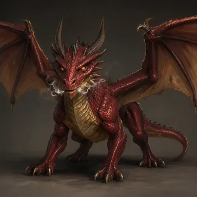
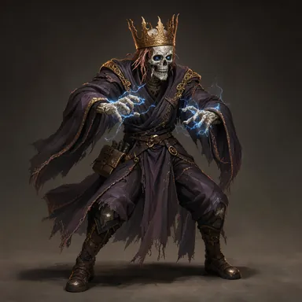
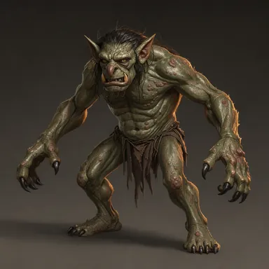
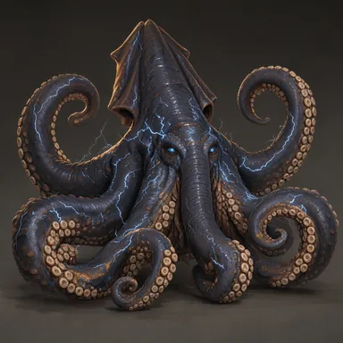
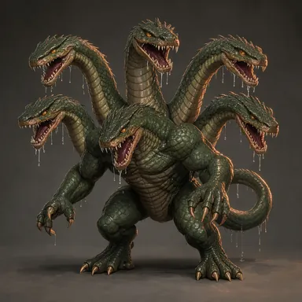
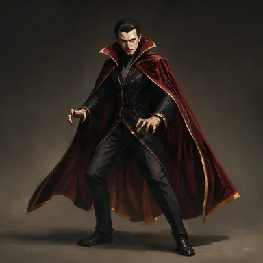
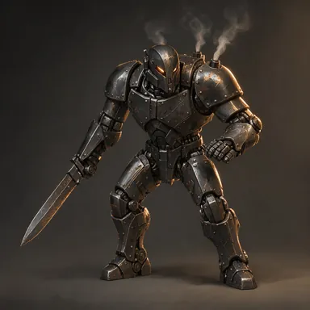
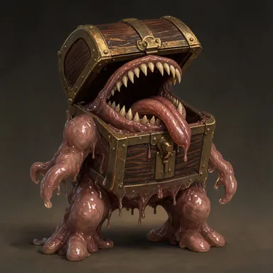
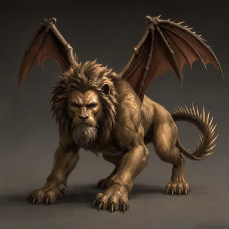
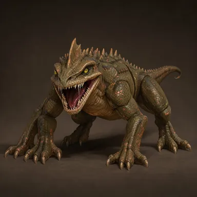
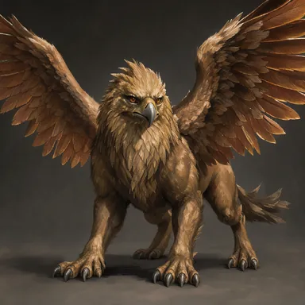
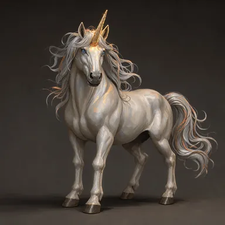
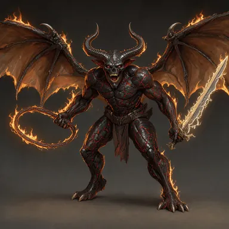
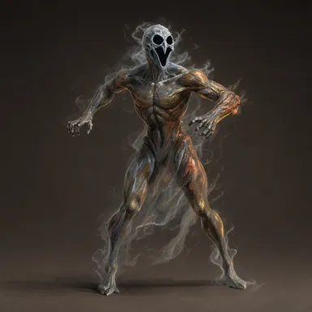
Des héros qui vous ressemblent
Neuf espèces, deux silhouettes, trois visages chacune : 54 portraits à choisir.
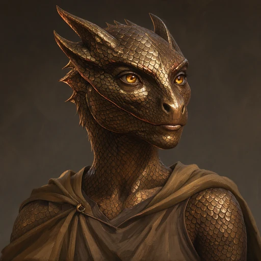
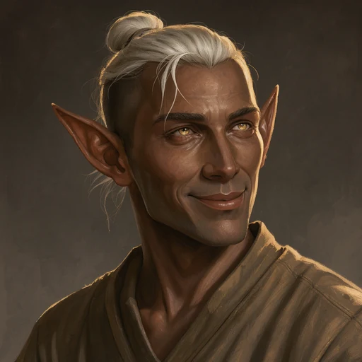
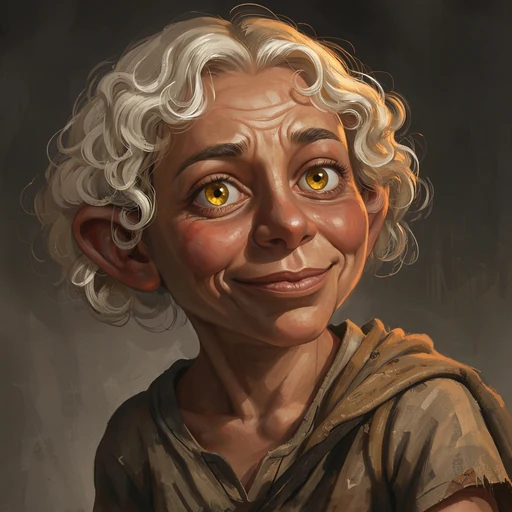
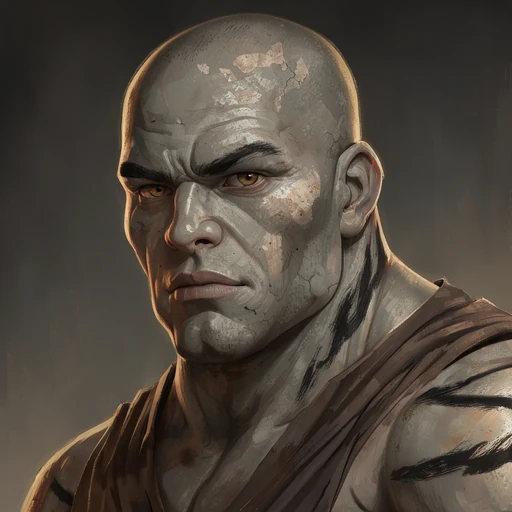
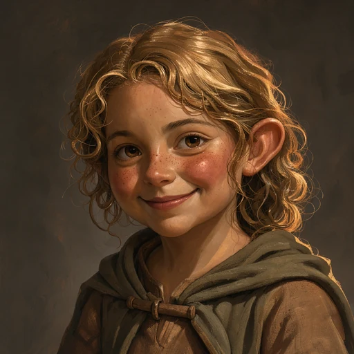
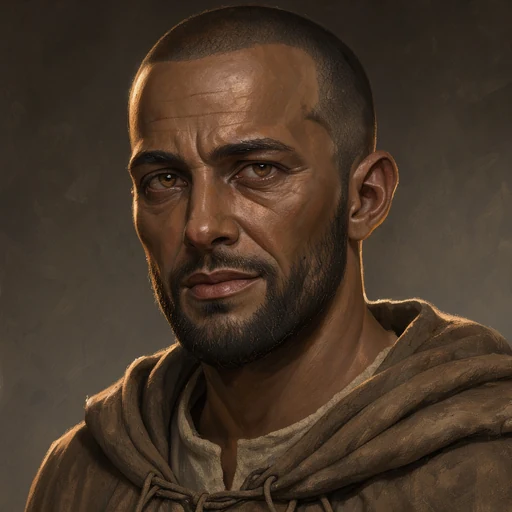
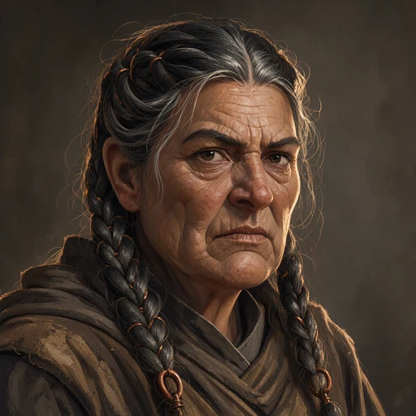
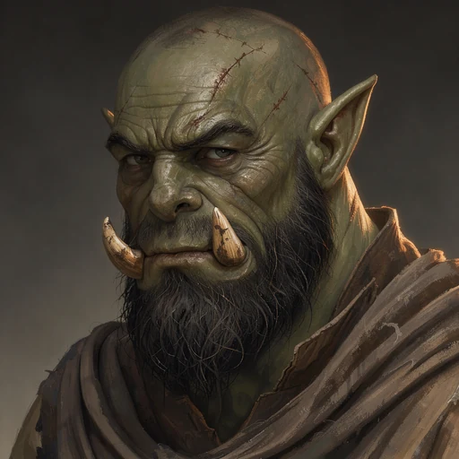
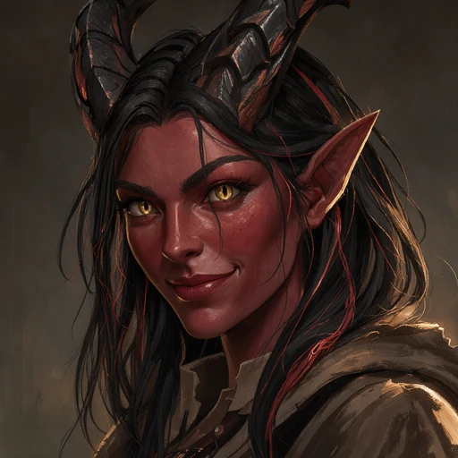
Des mondes qui se dessinent
La carte, un lieu, une rencontre et la fiche de La Marche d'Ombrefiel, l'histoire complète du jeu.
Fait par Claude
Fait par une IA, de bout en bout
La Table du Conteur a été entièrement créée par Claude, l'intelligence artificielle d'Anthropic.
Le jeu, ses règles, ses combats, l'intelligence des monstres, le créateur de personnage et ce site lui-même : Claude les a conçus et écrits, étape par étape, en dialoguant avec son auteur humain. C'est lui qui décide de la direction et qui valide chaque choix ; Claude propose, construit, vérifie et corrige.
Les histoires aussi. Les mondes, les personnages, les énigmes, les dilemmes et les fins ont été imaginés et écrits par Claude, avec des assistants Claude spécialisés qui se relisent entre eux et un joueur automatique qui prouve que chaque fin est atteignable.
Pour les images, les voix, les musiques et les bruitages, Claude a dirigé des modèles de création spécialisés : il a écrit les consignes, choisi, relu et installé chaque résultat.
- Code du jeu, règles et combats : écrits par Claude
- Histoires, personnages, énigmes et dialogues : écrits par Claude
- Images, voix et sons : dirigés et sélectionnés par Claude
- Ce site : conçu, rédigé et mis en page par Claude
- Un humain garde la main : il décide, Claude exécute
Claude est une IA développée par Anthropic. Ce projet est indépendant et n'est pas un produit d'Anthropic.
Soyez prévenu de la sortie
Laissez votre adresse e-mail pour être averti quand le jeu sortira.
Où en est le jeu
La Table du Conteur est un prototype jouable, encore en cours de développement. La Marche d'Ombrefiel est livrée complète ; La Dîme des Roseaux est en cours d'écriture.
Le conteur IA est à l'essai. L'écran de réglage de votre clé d'API n'est pas encore là.
Une application de bureau est en préparation. Elle gardera la clé d'API du joueur dans le trousseau du système.
- Prototype jouable, en cours de développement
- Une histoire complète livrée : La Marche d'Ombrefiel
- La Dîme des Roseaux en cours d’écriture
- Le conteur IA est à l'essai
- L'écran de réglage de la clé d'API n'est pas encore là
- Application de bureau en préparation
- Clé d'API gardée dans le trousseau du système, sur le bureau